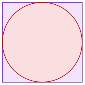
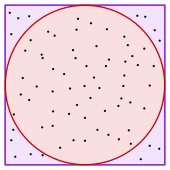

Estimating Pi Using Random Numbers
Python can be a very powerful tool to understand more about the world around us. Let's apply a powerful function of Python (Random Number Generator) to help us understand more about Pi ($\pi$). Pi is an interesting mathematical constant that shows up in various areas of physics and mathmatics. Pi ($\pi$) is a mathematical constant, approx. 3.141592654. It is defined in Euclidean geometry as the ratio of a cirle's circumference to its diameter, and also has various equivalent definitions.
\[ \pi = \frac{C}{d}\]
Application
Let's create a square with a perimeter of 8. So, each side length would be 2 units long. Now inscribe a circle inside with a radius of 1. This circle should touch each one of the four side of the squre.
Using a random number generator we'll create 75 random $(x,y)$ points on the interval $[ -1 \le x,y \le 1]$. It's important to remember that the random points must be uniformly distributed. Meaning that each point on the interval $[-1,1]$ all have the same probability. As you can see below are 75 points uniformly distributed within the square. Let's estimate pi using this method.
We'll need to know what points are inside of the circle. To do this we'll use the following equation $x^2+y^2 \le r^2$. If the satisfies the equation than we know it's within the circle and we can add it to the count. Once we have all of the points counted we can then move onto estimating $\pi$. Below is the equation to help us estimate $\pi$.
\[ \frac{A_{\;points\,in\,circle}}{A_{\;points\,in\,square}} = \frac{\pi r^2}{(2r)^2} = \frac{\pi r ^2}{4r^2} = \frac{\pi}{4} \qquad \qquad \pi = \frac{4 * A_{\;points\,in\,circle}}{A_{\;points\,in\,sqaure}}\]